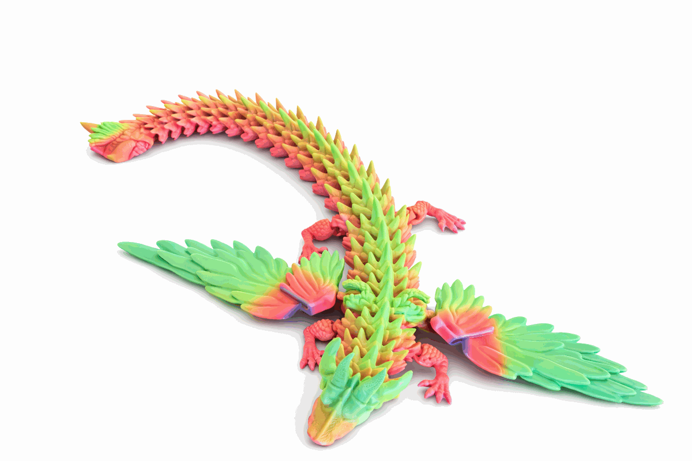

Collection page
Dragons, whale sharks, octopuses, and more, with joints that bend and wiggle so you can pose them however you like. Every creature is printed to order in Farmington Hills, MI, and they're a hit with kids, collectors, and anyone who needs a desk toy.
Pick one up for free in Farmington Hills or have it shipped anywhere in the U.S.

They sit somewhere between a toy, a collectible, and a gift. Kids play with them, adults keep them on their desks, and collectors line them up on a shelf. Because each one is printed to order, you can usually pick the colors too.
Colorful, interactive, and easy to give when you want something fun without overthinking it. Most are $8 to $15.
Good as a desk drop, a small reward, or a little gift that's more interesting than a standard trinket.
Ordering for a party, classroom, or gift set? We can match your colors and print in larger quantities. See our custom party favors.
Want an animal that isn't in the shop yet? Send us a request and we'll tell you if we can print it. Slugs and axolotls are two of the most requested.
They're 3D printed animals made of linked segments that bend and move, so you can pose them, wiggle them, or fidget with them.
Kids, collectors, and anyone who likes a desk toy. They're also one of our most popular party favors and stocking stuffers.
Yes. Most designs can be printed in different colors or color blends. Pick from the options in the shop, or tell us what you want on the order form.
Most orders are ready in 5 to 7 business days. Pickup in Farmington Hills is free, and U.S. shipping is $10, or free over $49.97.